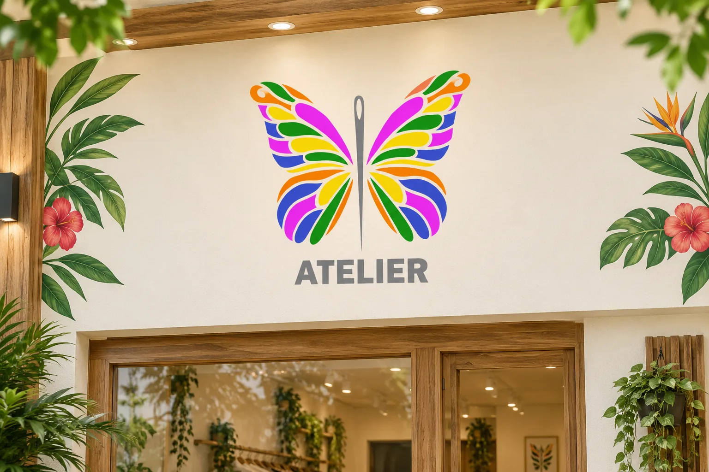
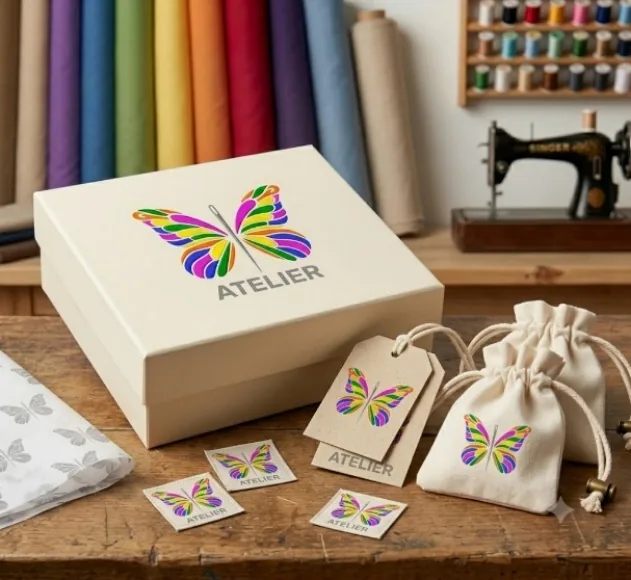
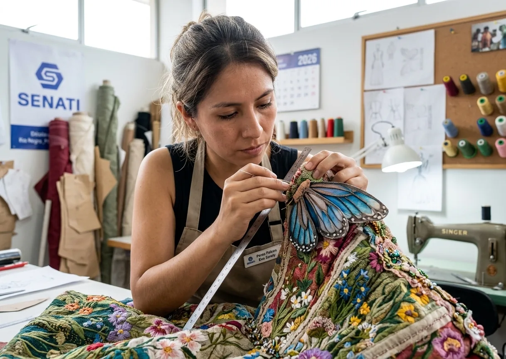
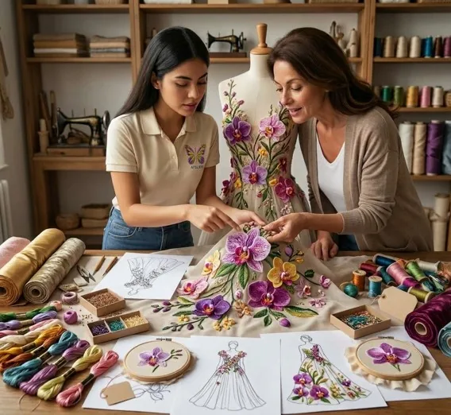
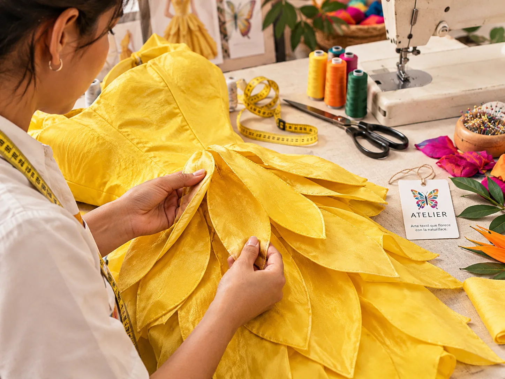
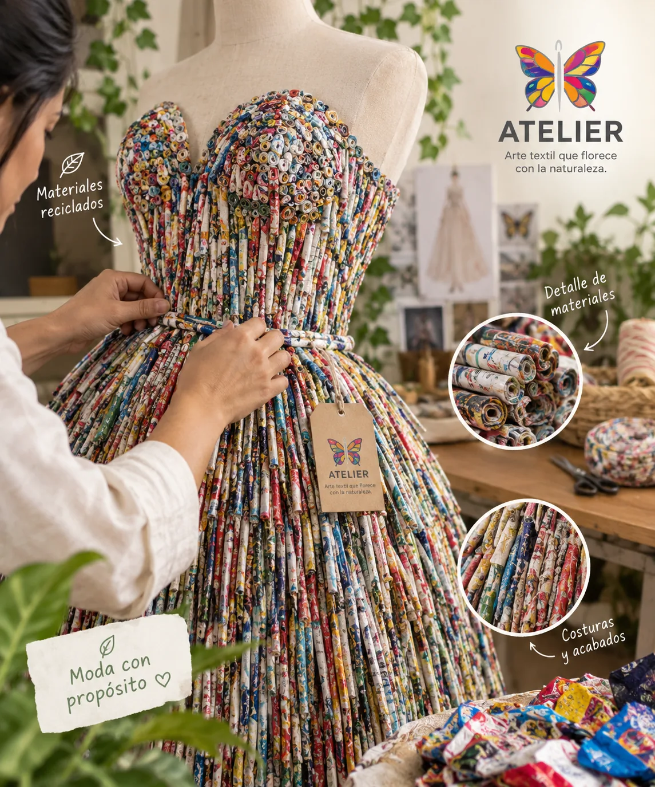
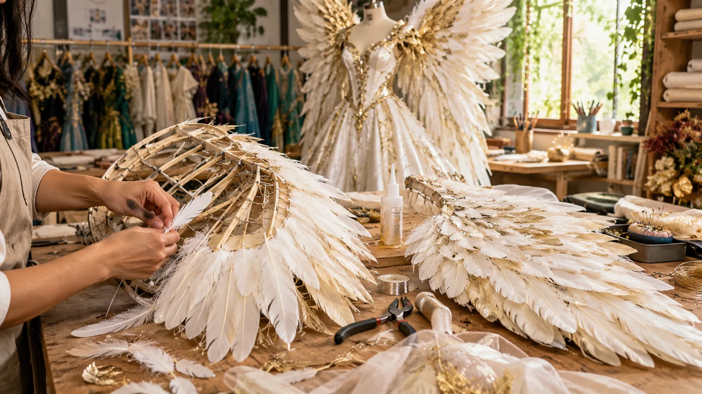

Viste tu imaginación.
Florece con la naturaleza.
Vestuario artístico, alas de fantasía y ecodiseño inspirados en la biodiversidad de la Selva Central.
DISEÑO · FANTASÍA · ECODISEÑO
Hecho para
brillar distinto ✳
brillar distinto ✳
Nuestra esencia
↗“Creamos vestuarios únicos y ecodiseños silvestres para inspirar.”
Descubre Atelier
Un mundo de posibilidades
Diseñamos piezas que convierten una idea en una experiencia visual inolvidable.
↗Fantasía
Alas y personajes
Disfraces artísticos con alas articuladas inspiradas en mariposas y aves.
 ↗
↗Naturaleza
Vestidos silvestres
Diseños con inspiración botánica, flores y formas de la Selva Central.

↗Identidad
Detalles con propósito
Una identidad visual colorida que conecta arte textil, naturaleza y sostenibilidad.
Nuestro eslogan
Ver coleccionesArte textil que florece con la naturaleza.
Colecciones
Elige tu mundo
Desliza para conocerlas.



El taller
La creatividad toma forma, puntada a puntada.
Desde Mazamari, creamos y alquilamos vestuarios temáticos para eventos, sesiones fotográficas, turismo y creadores de contenido.
Conoce Atelier ↗Atelier en imágenes
Ver galería completa ↗Detalle, color y naturaleza






Cómo alquilar
De la idea al vestuario en 4 pasos
Todo por WhatsApp, sin complicaciones.
- Elige una colección
Mira las piezas de referencia.
- Cuéntanos tu evento
Fecha, tipo de evento y talla.
- Confirmamos disponibilidad
Te respondemos por WhatsApp.
- Recoge y luce tu diseño
Una experiencia cómoda y mágica.
Nuestro propósito
Consulta disponibilidad ↗El arte también puede cuidar el planeta.
Exploramos el ecodiseño mediante materiales reutilizados, creatividad y una mirada respetuosa hacia la naturaleza.
Recorre el proyecto
Explora las secciones de Atelier
Conoce la marca, sus aplicaciones y cómo se comunica con su comunidad.
01EmpresaDatos, descripción, misión, visión y valores↗02Público objetivoSegmento, edad, ubicación, necesidades y características↗03Identidad corporativaImagen, elementos, tipos e identidad cultural y verbal↗04Identidad visualLogotipo, colores, tipografía y elementos gráficos↗05Imagen institucionalPercepción, fortalezas, mejoras y componentes↗06AplicacionesTarjetas, empaques, uniformes, afiches y sitio web↗07ComunicaciónLenguaje, canales, mensaje principal y eslogan↗08Manual de identidad corporativaNormas visuales, verbales, colores y aplicaciones↗09Propuestas de mejoraEstandarización, publicidad, tipografía y redes↗10Galería visualBocetos, diseños, aplicaciones y fotografías↗